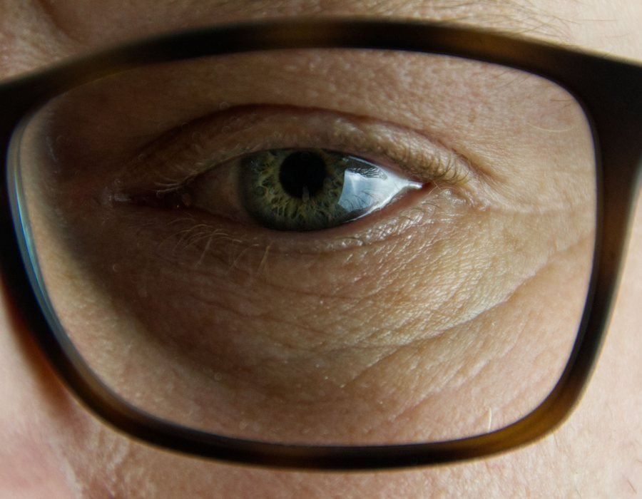
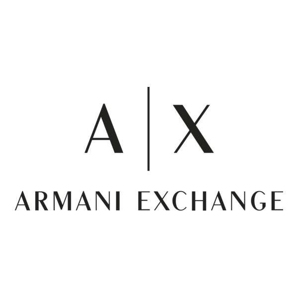
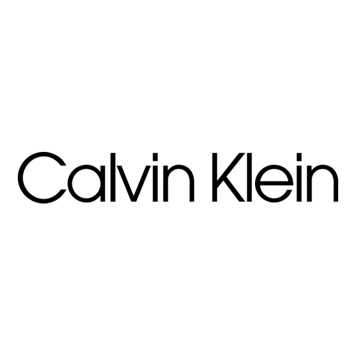
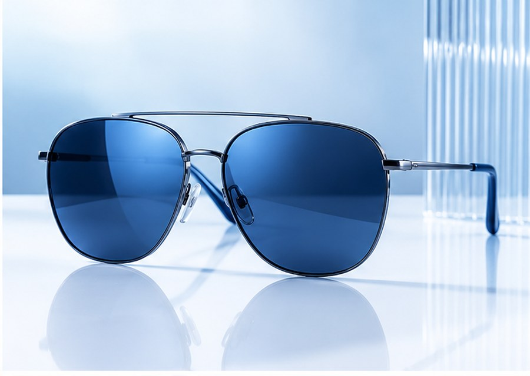
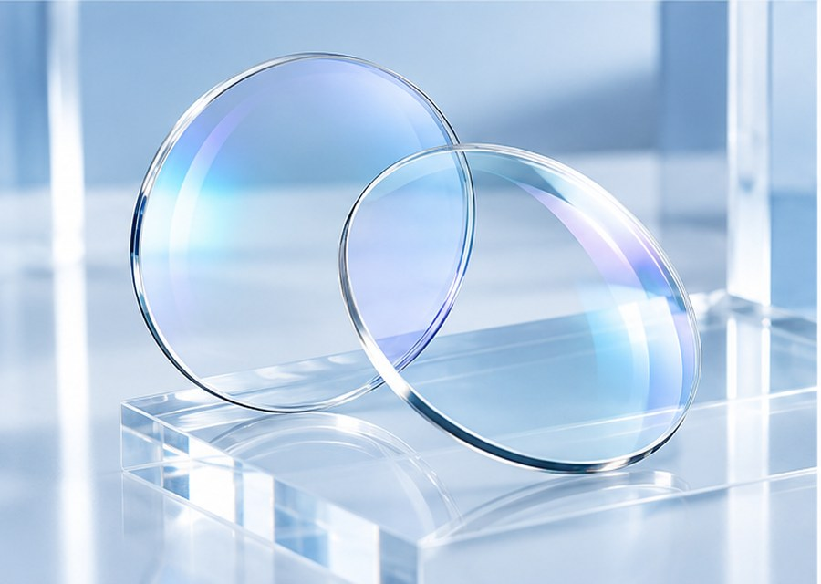
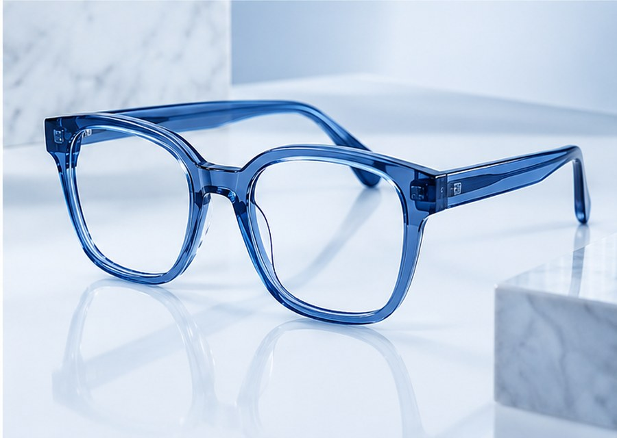

Análise de rosto e uso
Entendemos formato, medidas, prescrição e rotina para indicar armações confortáveis e lentes coerentes.
Óculos de grau, solares e lentes com orientação clara para você escolher com segurança, conforto e um visual que combina com o seu dia.
Cada escolha passa por conforto, proteção e estilo. A armação certa valoriza o rosto e a lente certa acompanha o seu dia sem pesar.

Entendemos formato, medidas, prescrição e rotina para indicar armações confortáveis e lentes coerentes.
Antirreflexo, proteção UV, filtros para telas, fotossensíveis e soluções para dirigir, estudar ou trabalhar.
Ajustes, limpeza, orientação de uso e relacionamento contínuo para manter conforto e qualidade visual.
Conferimos altura, distância pupilar e encaixe para que a lente trabalhe corretamente no seu dia a dia.
Selecionamos modelos que equilibram proporção, conforto, resistência e personalidade no rosto.
Orientamos opções para sol, telas, leitura e direção, sempre pensando em bem-estar e prevenção visual.
Nosso atendimento organiza cada escolha: medidas, lente, armação, ajuste e orientação de uso. Assim você sai sabendo o que levou e por que aquilo faz sentido para sua rotina.
Recebemos a receita, ouvimos suas necessidades e identificamos onde os óculos serão mais usados.
Verificamos informações importantes para lente, encaixe e conforto antes de fechar a escolha.
Apresentamos lentes, tratamentos e armações com diferença clara entre benefício e indicação.
Ajustamos a armação para melhorar estabilidade, proporção e sensação de uso no dia a dia.
Explicamos limpeza, conservação e sinais de troca para prolongar a vida útil dos seus óculos.
Selecionamos marcas que unem tradição, desenho bonito e bom acabamento para você comparar opções com mais confiança na hora de escolher sua próxima armação.

Armani Exchange
Calvin Klein Armações de grau
Armações de grau
Modelos discretos para trabalho, estudo e uso prolongado.

Óculos solaresLentes com proteção UV e formatos para diferentes estilos.

Lentes oftálmicasTratamentos para telas, direção, leitura e exposição ao sol.

Design autoralCores, acetatos e geometrias para quem quer destacar o olhar.
Responda algumas escolhas rápidas sobre estilo, uso e encaixe. No final, a gente monta uma mensagem pronta para você chamar a Óticas Fascinante no WhatsApp com mais contexto.
No blog, você encontra orientações simples sobre troca de lentes, limpeza correta, proteção visual, formatos de armação e novidades para usar seus óculos com mais segurança.
Acessar blogFale com a equipe, acompanhe novidades da vitrine e salve dicas para cuidar melhor dos seus óculos.